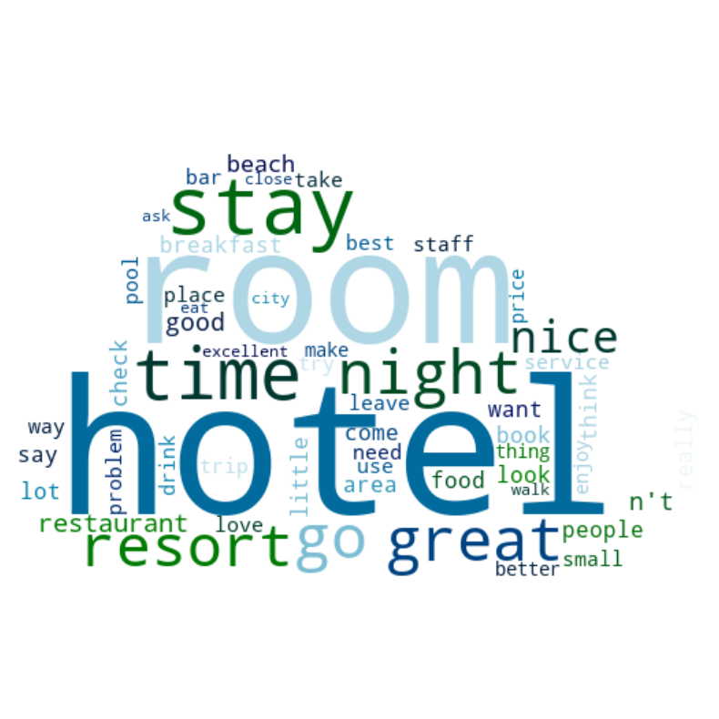
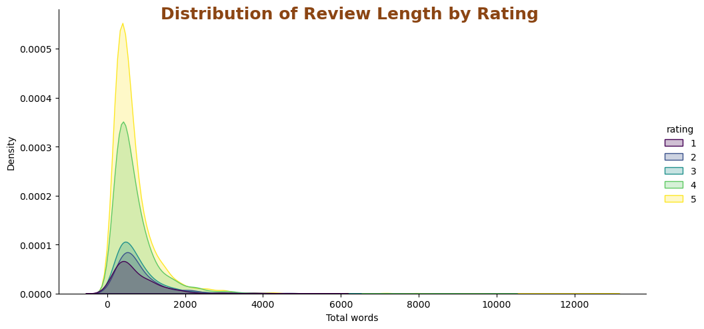
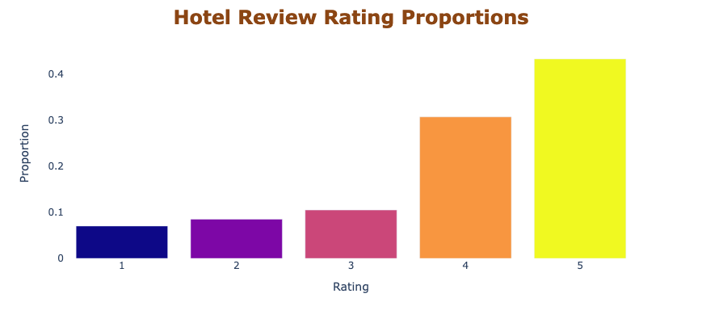

Data Science Projects: Showcasing My Learning Journey
In this section, you will find a comprehensive collection of projects I have completed during my journey as a data science student, along with my impactful master's thesis. These projects highlight my skills, knowledge, and practical experience in various areas of data science, including machine learning, data analysis, statistical modeling, and more.
Predicting Dyeing Process Outcomes in the Textile Industry: A Case Study at Textil Olius.
XGBoost classifier to predict the result of a dyeing process. The model takes input parameters like colorants, machine, weight, and others to accurately predict if the process will be a success or a failure. SHAP values are used to interpret the model, revealing which features are most important in the prediction.



Sentiment Analysis: TripAdvisor Hotel Reviews
This project focuses on classifying hotel reviews from TripAdvisor using machine learning techniques. The dataset used in this project is sourced from Kaggle, specifically the TripAdvisor Hotel Reviews dataset.
Models Classifiers Comparison
Adipiscing a commodo ante nunc magna lorem et interdum mi ante nunc lobortis non amet vis sed volutpat et nascetur.